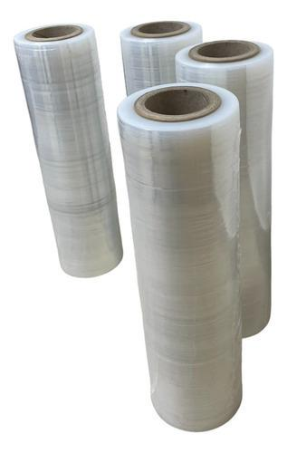
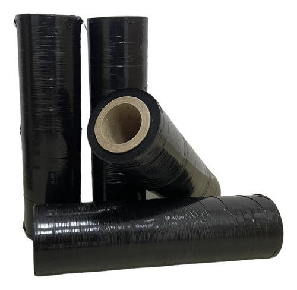
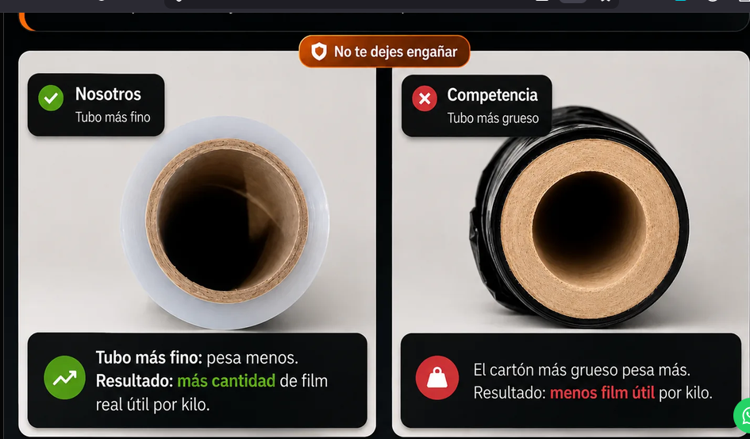

Papelera ARG
Film Stretch Eco Tubo 4,5 kg
Film stretch cristal y negro 50 cm. Más film útil, menos cartón y mejor rendimiento real para uso continuo.
Eco Tubo4,5 kgMayorista

Productos y consultas
Consultá por film stretch cristal o negro para comercios, logística, pallets y depósitos.

Film stretch cristal 50 cm Eco Tubo 4,5 kg
Mayor rendimiento real y mejor manipulación por tubo liviano.
Cotizar
No te dejes engañar
Lo importante no es solo el peso. Lo importante es cuánto film útil real trae cada rollo.

Tubo más fino: pesa menos y deja más cantidad de film real útil por kilo.
Tubo más grueso: el cartón pesa más y deja menos film útil por kilo.
Menos peso muerto, mejor aprovechamiento y manipulación más cómoda.
Complementos de embalaje
Otros productos que combinan con film stretch.

Cinta adhesiva
Transparente, FRÁGIL y de embalaje.

Embalaje
Insumos para depósito, logística y despacho.

Etiquetas
Etiquetas para identificación y envíos.

Resmas A4
Papelera mayorista para oficina y empresa.